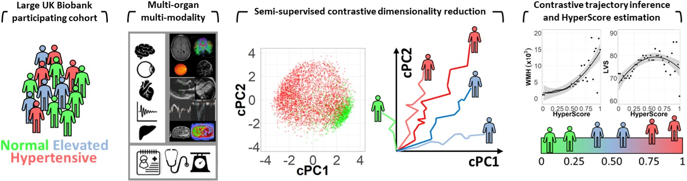
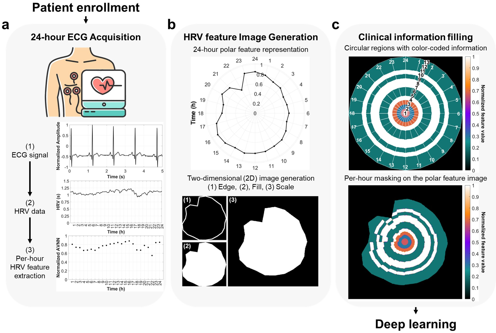
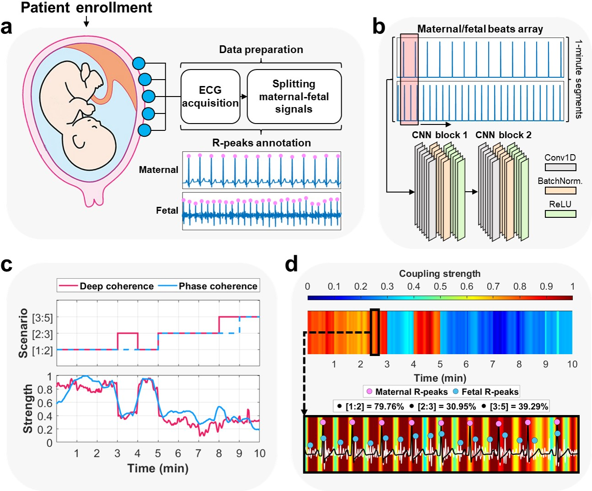
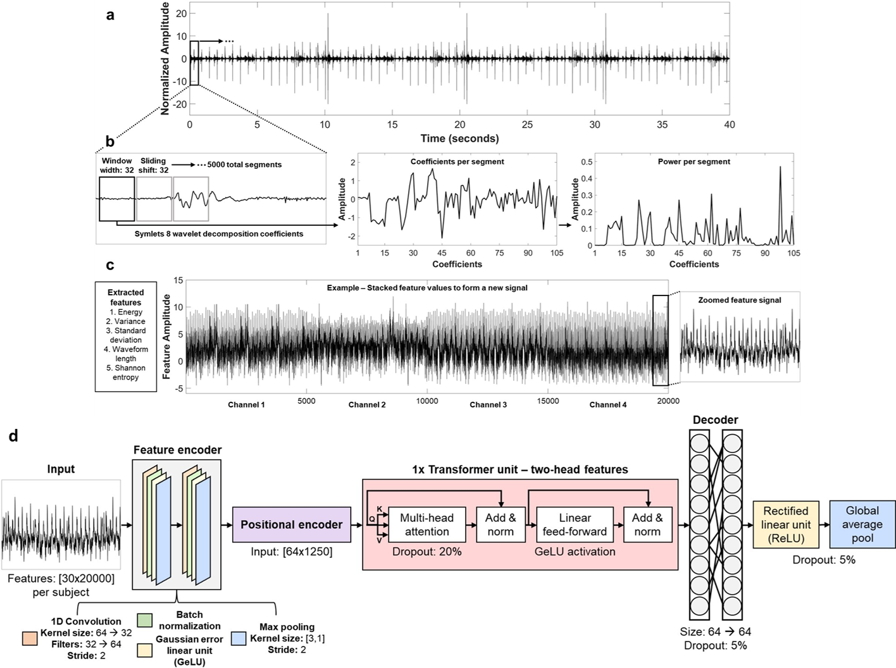

Research
Research interests:
Current works:

Elevated blood pressure is a major cause of end-organ damage. Its mechanism is complicated and defining it requires large datasets with multi-modality imaging resources and advanced computational techniques. Here, we presented a comprehensive study using semi-supervised machine learning to model the longitudinal progression of hypertension jointly across body organs with a single and unified measure; the HyperScore.

Heart failure (HF) is a multi-faceted and life-threatening syndrome that affects more than 64.3 million people worldwide. Current gold-standard screening technique, echocardiography, neglects cardiovascular information regulated by the circadian rhythm and does not incorporate knowledge from patient profiles. In this study, we proposed a novel multi-parameter approach to assess heart failure using heart rate variability (HRV) and patient clinical information.

In the last two decades, stillbirth has caused around 2 million fetal deaths worldwide. Although current ultrasound tools are reliably used for the assessment of fetal growth during pregnancy, it still raises safety issues on the fetus, requires skilled providers, and has economic concerns in less developed countries. Here, we propose deep coherence, a novel artificial intelligence (AI) approach that relies on 1 min non-invasive electrocardiography (ECG) to explain the association between maternal and fetal heartbeats during pregnancy.

One in every four newborns suffers from congenital heart disease (CHD) that causes defects in heart structure. The current assessment protocol relies heavily on echocardiography, however, it causes delays in the diagnosis owing to the need of experts who vary markedly in the ability to detect and interpret pathological patterns, and echo is still causing difficulties in low- and middle-income countries due to its expensive machinery. Here, we propose deep learning to automate the detection of heart murmurs caused by CHD at an early stage of life in cost-effective and widely-available phonocardiography (PCG).